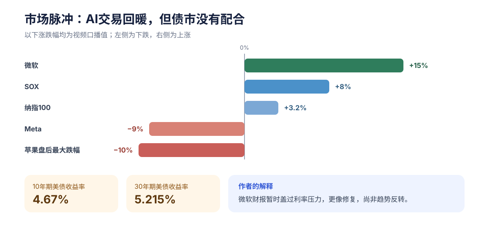
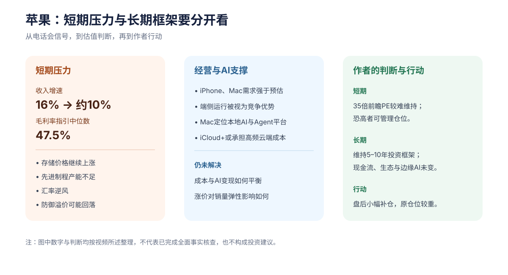
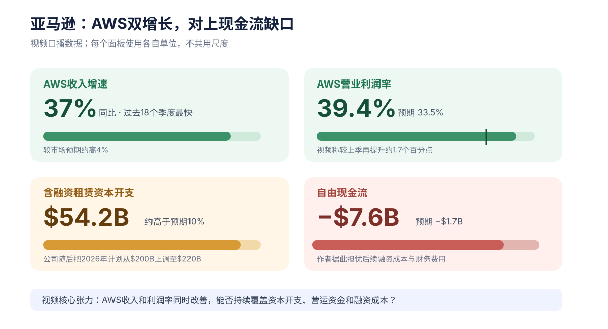
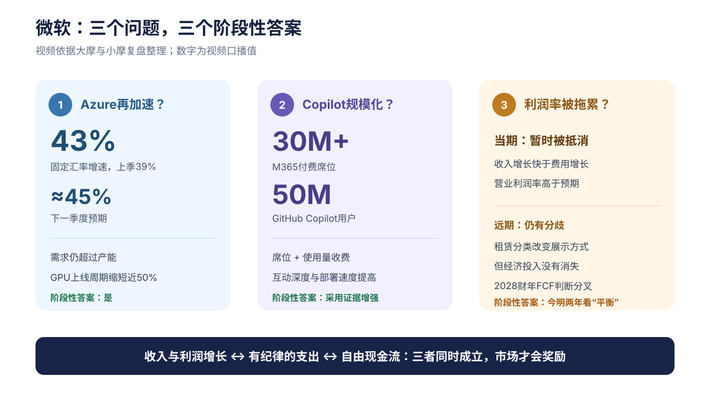
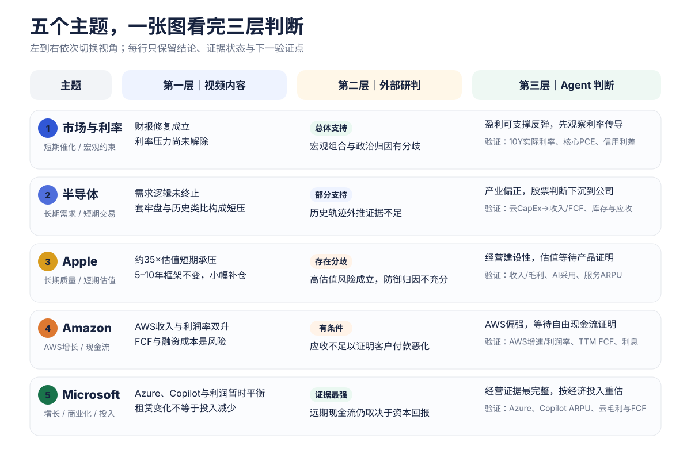

利率压力未解除
半导体大反弹！苹果估值崩溃！亚马逊有五倍空间？微软创历史记录！
第一部分｜视频 / 作者内容
报告说明（非原内容）：本部分直接呈现原内容中的数据、推理、判断、结论与限定，不等同于已核验事实。Jason 与 Steven 的个人研判、持仓或行动以橙色卡片标示；卡片仍属于原内容层。核心观点后的链接用于回溯上下文。
一页看懂

图表说明（报告整理，非原内容）：核心不是“AI还涨不涨”，而是增长能否转化为利润、自由现金流和可持续估值。
短期套牢盘与利率承压
高估值遇到增长与成本压力
自由现金流与融资是约束
远期仍看投入回报
一、市场：上涨是财报修复，不是利率解除

资金重新集中到AI交易。此前连续六日跑赢的标普等权指数，当日落后大盘约180个基点；半导体、存储和AI基础设施明显走强，软件板块没有同步大幅回撤。大型科技股内部则出现清晰分化：微软财报后大涨，Amazon收盘和盘后继续走高，Meta与Apple承压。这说明市场并非无差别回补科技股，而是在重新评估不同公司的AI投入能否带来收入和利润。00:33–02:29
美元、贵金属、比特币期货与原油也出现明显波动，但跨资产变化没有被扩展成独立趋势判断。最重要的对照仍是：股票端因财报回暖，债券端却没有同步给出“压力解除”的信号。因此，股市上涨与长端收益率高企可以同时存在，只是前者更依赖盈利兑现，后者继续限制估值扩张空间。00:33–04:11
| 观察面 | 口播要点 | 含义 |
|---|---|---|
| 风格 | 纳指100约 +3.2%，SOX约 +8%；微软强、Meta和苹果弱 | 资金重新集中到AI，个股开始按投入质量分化 |
| 宏观 | 核心PCE同比3.3%，二季度GDP增长1.5% | 不是理想组合，但暂未继续强化“过热”交易 |
| 债券 | 长端收益率仍处高位 | 企业融资成本和股票折现率约束仍在 |
核心PCE仍高于目标，而GDP低于预期，这不是典型利好组合；但较弱的增长数据也暂时缓解了经济继续过热、通胀再加速的担忧。由此形成的不是“宏观转好”，而是一个更窄的判断：在市场高度担心利率进一步上行时，没有继续恶化也可能被当作阶段性利好。03:17–03:46
报告标注 · 视频内个人判断Jason市场修复与利率风险
微软财报重新点燃AI交易，但一天的上涨不能确认趋势反转。AI资本开支可以很高，前提是收入、利润和现金流给出回报；若长端利率继续上行，周四行情更适合定义为“财报驱动的修复”。02:03–04:11
二、半导体：短期承压，长期逻辑未终止
短期
深度回撤后，成本线附近可能出现套牢盘卖压。
类比
SOX与2000年轨迹只是一种情景，不是预测模型。
长期
大科技继续扩张资本开支，需求逻辑尚未终止。
短期压力先从投资者行为解释：高位买入、经历深度回撤后重新接近成本线，部分投资者会优先选择保本离场。这种“亏损时不愿卖、回本后急于卖”的处置效应，意味着单日强反弹不必然消除上方卖压。04:12–04:50
SOX与2000年互联网泡沫时期的走势被放在一起作线性类比。按照这条类比路径，指数需要在四个月内突破前高才会改写轨迹；但类比只用于描述短期压力，不构成“泡沫必然破裂”的预测。大型科技公司仍在增加资本开支，AI算力、存储和基础设施需求并没有因短期价格波动而消失。04:51–05:29
真正可能把行业压力扩散到更广泛股票的变量是长端利率。若融资环境继续恶化，受影响最大的不会是所有半导体公司，而是高估值、高杠杆、自由现金流不足，或需要持续外部融资才能扩张的公司。这一判断保留了明确前提，并没有把风险写成已经发生的结果。05:30–05:59
报告标注 · 视频内个人判断Jason半导体的两套时间框架
回到成本线的投资者可能卖出保本，因此短期反弹仍会遇到压力；但不能因2000年类比就判断泡沫必然破裂。长线看需求与资本开支，短线看套牢盘和长端利率。若债市压力继续升高，高估值、高杠杆和依赖融资的公司会先受影响。04:12–05:59
三、Apple：短期估值承压，长期框架不变
16% → 约10%本季到下一季收入增速中位数
47.5%下一季毛利率指引中位数
约35×讨论中的前瞻市盈率
5–10年长期持有框架
本季财报本身大体平稳，真正改变市场关注点的是电话会中的下一季展望。除iPad和应用商店外，多数产品线表现尚可；本季毛利率也因关税相关利好维持在50%以上。问题在于，下一季收入增速中位数从本季16%降至约10%，毛利率指引中位数约47.5%，增长与利润率的组合都比本季弱。06:01–07:20
管理层给出的原因不只有需求：先进制程产能不足、低估iPhone和Mac需求、汇率逆风，以及存储价格自去年12月以来持续上涨。现有库存、其他零部件降价和产品组合可以暂时抵消部分成本，但缓冲会逐步减弱。提高部分Mac和iPad价格、扩大DRAM采购来源可以分担压力，却可能带来销量和价格弹性的新问题。07:02–07:31
| 模块 | 关键信息 |
|---|---|
| 财报 | 除iPad和应用商店外，多数产品线尚可；电话会把关注点转向收入放缓、毛利率和存储成本 |
| 成本 | 库存、零部件降价和产品组合可暂时缓冲；Mac、iPad已部分涨价，DRAM采购来源在评估中 |
| AI | 端侧运行和Mac本地推理是优势；高频云端AI可能进入更高档iCloud+，但成本与变现尚未平衡 |
| 补充 | 硬件租赁计划、在美投入6000亿美元等为已披露事项，没有改变本段主判断 |

AI路线强调端侧运行、本地推理和Mac作为Agent及模型运行平台的能力，这是长期产品支撑；云端AI则引出另一层约束：高频使用会增加推理成本，未来可能需要更高档的iCloud+套餐承接，但成本与变现如何平衡仍不确定。因此，产品能力可以增强长期护城河，却还不能直接回答短期盈利能否支撑约35倍估值。07:32–08:09
报告标注 · 视频内个人判断Jason估值、持仓与行动
近期上涨更像防御属性，而非盈利改善；若盈利预期不上修、防御溢价回落且成本继续上升，约35倍估值难以维持。短期估值判断不改变五到十年框架，盘后已按“大跌5%补仓”的规则小幅买入，但因原仓位较重而控制了规模。08:19–09:44
四、Amazon：AWS双增长，现金流是门槛
净销售额 $200.6B同比 +20%AWS $42.2BAWS +37%AWS利润率 39.4%FCF -$7.6B
集团净销售额2006亿美元，同比增长20%，高于预期约2%。每股收益5.75美元包含较大规模的Anthropic投资收益；估算剔除后约1.95美元，仍高于预期。在线购物约704亿美元、基本符合预期，广告略好于预期，其他业务没有明显偏离，因此零售基本盘提供稳定性，但不是财报的主要惊喜。09:47–10:23
真正改变财报质量的是AWS。收入422亿美元、同比增长37%，是过去18个季度最快增速，并在一个季度内提高9个百分点；营业利润率39.4%，也明显好于口播所引述的市场预期。Graviton、Trainium等自研芯片可能改善成本结构，AI业务和芯片业务的ARR均已超过250亿美元，多年期模型公司合作则提高了后续需求可见度。10:23–11:34

| 模块 | 结论 | 关键数字 / 限定 |
|---|---|---|
| 零售基本盘 | 稳住但惊喜有限 | 在线购物约704亿美元；EPS 5.75美元含Anthropic投资收益，估算剔除后约1.95美元 |
| AWS | 收入与利润率同时加速 | 增长37%、过去18个季度最快；自研芯片与AI业务均在扩张 |
| 现金流 | 投入和营运资金形成压力 | 含融资租赁CapEx约542亿美元、经营现金流约454亿美元、FCF负76亿美元 |
| 指引与融资 | 下季中位数略低于预期，资本开支继续上调 | 2026年CapEx计划约2000亿→2200亿美元；AWS远期万亿美元收入是管理层目标，不是已实现事实 |
增长亮点与现金流压力同时存在。含融资租赁的资本开支约542亿美元，高于预期近10%；经营现金流约454亿美元，低于预期约12%；自由现金流负76亿美元，也弱于负17亿美元的市场预期。营运资金三项合计相对预期少近100亿美元，其中应收贡献最大，但单个季度的变化不足以确认客户信用已经恶化。11:34–12:15
下一季收入和营业利润指引中位数略低于预期，剔除约80个基点的汇率影响后大致接近预期。与此同时，2026年资本开支计划继续上调，意味着AWS增长越快，市场越需要回答新增折旧、融资和利息最终如何进入每股收益与自由现金流。管理层提出AWS远期达到万亿美元年收入，是长期目标和容量判断，不是当前估值可以直接使用的已实现结果。12:15–13:42
报告标注 · 视频内个人判断Jason应收、现金流与融资
应收相对预期形成较大负贡献，可能意味着账期延后或付款意愿变化，但这只是单期数据推断。若自由现金流继续恶化，举债和利息费用会增加，并对每股收益形成压力；AWS增速需要覆盖新增融资成本。11:34–13:20
报告标注 · 视频内个人判断StevenAWS双增长与股价空间
AWS收入与利润率双增长说明巨额投入正在被合理化，这一趋势至少在2026年仍可能持续；财报质量较高，相关增长叙事尚未完全反映在股价中，大涨后仍有上涨空间。13:43–15:00
五、Microsoft：三项检验暂时同时过关
市场原本集中追问三件事：Azure能否重新加速、Copilot能否形成规模化收入、巨额AI投资是否会拖累利润率。这次财报对三项问题都给出阶段性正面证据，但“阶段性”很重要——近期经营改善与远期资本回报仍然是两个不同问题。15:01–15:24

| 检验 | 口播证据 | 尚未解决的问题 |
|---|---|---|
| Azure再加速 | 固定汇率 +43%，上季 +39%，下季约 +45%；GPU上线周期缩短近50% | 新增容量能否持续转化为资本回报 |
| Copilot规模化 | M365付费席位 3000万+；GitHub Copilot用户 5000万，收费向“席位+用量”扩展 | 使用增长能否变成续费、收入和净利润 |
| 利润率与投入 | 收入增长快于费用；报告CapEx因使用年限和租赁分类而下降 | 经济投入、租赁义务和2028年以后FCF仍有分歧 |
| 被忽略的短板 | 一项PC相关收入下季可能下降8%–11%，Windows OEM与设备或下降20%以上 | 是否开始拖累未来盈利 |
Azure固定汇率增速由39%提高到43%，下一季预计约45%。加速不完全依赖新建数据中心：微软第四季度新增31座数据中心、全年新增88座，同时通过CPU/GPU集群效率和部署流程改善，使主要区域GPU从到货到使用的时间缩短近50%。这意味着已有资产更早进入收入环节，但能否持续改善资产回报仍需后续现金流验证。15:24–16:40
应用层也从“用户数”进入“使用深度和收费方式”的检验。M365 Copilot付费席位超过3000万，大型企业部署和高频使用速度提高；GitHub Copilot用户达到5000万，收费从单纯席位扩展到“席位+使用量”，收入环比加速。采用增长说明商业化在推进，但席位、互动和调用最终仍要转化为续费、ARPU和净利润。16:41–17:40
利润率压力暂时被经营杠杆抵消：收入增速快于费用增速，营业利润率好于预期。不过，数据中心使用年限由15年延长至25年，部分租赁分类变化又使报告资本开支下降；这改变的是会计呈现和付款路径，不是经济投入消失。相关租赁仍会形成成本、付款义务和现金流约束，未来新增项目的适用范围也尚待澄清。17:41–19:02
正面主线之外还保留了一项PC业务短板：一项相关收入下一季可能下降8%至11%，Windows OEM与设备收入可能下降20%以上。它暂时没有推翻Azure和Copilot的改善，但如果下滑持续，仍可能削弱整体盈利增速。19:02–19:18
报告标注 · 视频内个人判断Jason增长、商业化与经济投入
Azure再加速和效率改善增强了资产回报；Copilot席位、部署与使用深度增长，说明商业化开始见效。资本开支数字下降主要来自使用年限和租赁分类变化，不能理解为实际投入消失。今明两年的最终检验，是收入与利润增长能否和有纪律的支出、自由现金流同时成立。15:01–21:19
大摩与小摩都认可近期Azure、Copilot和经营杠杆改善；差异集中在2028年以后资本开支能否继续与经营现金流、自由现金流平衡。财报究竟改变了微软的长期定价格局，还是只完成一次风险释放，仍待后续验证。19:19–22:00
六、科技五大新闻
1｜微软市值
单日增加约4500亿美元；Azure增长和资本开支计划是核心背景。
2｜三星与SK海力士
二季度营业利润合计创纪录；AI存储强，但扩产过剩风险仍在。
3｜Arm
数据中心授权翻倍、CPU订单管道超20亿美元；手机授权放缓。
4｜Meta
三季度指引逊于预期、自由现金流降至多年低位；AI支出仍扩张。
5｜DeepSeek
计划在内蒙古建设大型AI数据中心，投资或达500亿美元；芯片来源与出口限制受关注。
转录提示（非原内容）：具体功率规模存在 ASR 不确定性，未写入正文。
第二部分｜外部证据研判
视角切换：从这里开始检验主观判断、预测和因果推断；不重复第一部分的叙述，只保留证据状态、分歧与成立条件。


16条判断中：总体支持2、部分支持6、明显分歧2、信息不足2、取决于条件4。状态针对具体观点，不是公司评级。
宏观、半导体与利率
本注为基于外部信源形成的独立研判，不代表视频作者观点。
支持 1部分 2分歧 1不足 1有条件 1
支持：科技股反弹时长端收益率仍高，“财报修复、利率未解除”成立。
保留：套牢盘缺账户数据；SOX与2000年的四个月外推无统计验证；利率不能归因于单一政治人物。
条件：AI需求必须转化为现金流，新增产能不能演变为过剩。
Apple
对应第一部分：Apple
本注为基于外部信源形成的独立研判，不代表视频作者观点。
部分 1分歧 1有条件 1
支持：高估值、存储成本和供应限制提高脆弱性。
保留：当季收入、EPS、iPhone、Mac和服务均增长，无法证明上涨主要来自防御资金。
条件：产品、供货、定价、AI变现和风险承受力都需兑现。
Amazon
对应第一部分：Amazon
本注为基于外部信源形成的独立研判，不代表视频作者观点。
部分 1不足 1有条件 1
支持：AWS增长和利润率、资本开支与融资方向均有直接证据。
保留：单期“应收及其他”不足以证明客户付款恶化；新增利息尚未吞噬AWS利润增量。
条件：合同兑现、利润率、折旧后盈利与FCF必须同时改善。
Microsoft
对应第一部分：Microsoft
本注为基于外部信源形成的独立研判，不代表视频作者观点。
支持 1部分 2有条件 1
支持：Azure加速、效率改善和租赁方向有官方披露。
保留：使用与席位增长不能单独证明产品效果或足额投资回报。
条件：需继续改善续费、ARPU、云毛利、FCF，并把经营租赁计入经济投入。
Microsoft财报 · 租赁附注 · 英国政府试验

关键分歧为什么不能只看“支持 / 不支持”
宏观与半导体：方向有依据，传播路径仍不确定
7月30日科技股反弹时，10年和30年美债收益率仍约为4.68%和5.21%，直接支持“盈利修复没有解除长端利率压力”。云厂商需求和资本开支也为AI、数据中心及其供应链提供了产业需求依据。
但GDP放缓与核心PCE边际变化不能自动等同于软着陆；私人国内最终销售仍强。处置效应有学术研究支持，却缺少本轮半导体投资者的账户级成本数据；SOX与2000年的四个月路径也没有固定起点、缩放方法和样本外检验。
决定性证据：实际利率、信用利差、云厂商CapEx到收入与FCF的转化，以及供应商库存和应收，而不是单日指数涨跌。
Apple：公司质量有支撑，买入价格仍是另一命题
官方数据确认当季收入、EPS、iPhone、Mac和服务均增长，经营现金流、服务毛利率和活跃设备基础继续提供长期韧性；端侧模型与Private Cloud Compute也说明AI路线并非空白。
另一方面，财报前约34倍的一致预期前瞻市盈率、存储成本、供应限制和一次性关税退款，使“盈利不上修时估值更脆弱”具备依据。外部资料无法证明近期上涨主要来自防御资金，也无法仅凭公司质量证明任何价格下补仓都合理。
决定性证据：秋季产品是否形成真实换机、AI是否带来使用或服务收入，以及一次性利好退出后的毛利率。
Amazon：融资约束是真，客户付款恶化尚未证实
AWS收入增长37%、经营利润增长64%、利润率升至39.4%，为继续投资提供了直接经营证据；自由现金流转负、长期债务和利息增加、新贷款安排，则说明融资方向和资金约束同样真实。
但现金流表的“应收及其他”包含多类项目，缺少同口径构成、账龄和坏账数据，不能由单季变化推出客户付款能力恶化。公司仍有强劲经营现金流和大量现金及有价证券，因此风险更接近“资本回报待验证”，还不是流动性危机。
决定性证据：AWS合同兑现速度、折旧进入利润表后的利润率、应收账龄，以及未来两季TTM自由现金流。
Microsoft：近期证据最强，远期成本不能被会计分类遮住
Azure增长43%、容量更快上线、Copilot席位和ARPU改善，构成了本期最完整的“采用—收入—利润”证据链。管理层也明确说明，报告资本开支下降主要来自未来租赁分类变化，经济投资预期并未同步下降。
仍需保留的分歧是：互动次数和席位增长不能单独证明复杂任务效果、持续使用率或足额投资回报；经营租赁依然形成使用权资产、付款义务和经营现金流影响。近期经营改善不等于2028年以后资本开支与FCF已经平衡。
决定性证据：Copilot续费与用量收入、云毛利率、含租赁的经济投入，以及未来四个季度自由现金流。
第三部分｜Agent 综合判断
身份与边界：本节为 Agent 基于视频内容、既有外部研判和截至 2026-08-01 的公开资料形成的综合判断，不代表视频作者观点，也不构成投资建议。“观察”“等待证据”和“重新估值”是研究姿态，不是交易指令。

总判断：市场正在把AI投入从“叙事”推进到“回报验证”。Microsoft的经营证据最完整；Amazon AWS强，但集团FCF待证；Apple质量仍在，高估值需要产品与利润兑现；半导体需求真实，却不能外推到所有公司。长端利率仍是共同约束。
这里比较的是“经营证据完整度”，不是预期收益排序。Microsoft同时给出了云增长、产品采用、利润率和现金流；Amazon的亮点集中在AWS，集团层面仍处于高投入期；Apple的长期护城河和现金流没有被本季否定，但股票回报更依赖估值与下一轮产品兑现；半导体则必须从行业总量下沉到具体公司的客户、库存、资本强度和价格。[截至2026-08-01]
定价快照：财报惊喜已经部分进入价格
| 标的 | 价格 | 单日 | 动态市场口径PE | 已计价观察 |
|---|---|---|---|---|
| Apple | $308.91 | -7.14% | 37.4× | 已计入部分成本与指引担忧，但倍数仍高 |
| Amazon | $271.58 | +15.25% | 32.5× | AWS惊喜已被快速重估，不能称“市场尚未反应” |
| Microsoft | $464.72 | +3.01% | 27.7× | 正面财报已部分计价，仍需含租赁的回报模型 |
| SOXX | $504.89 | -0.06% | — | 指数平稳不能替代逐公司估值 |
快照截至 2026-08-01 00:15 UTC，只用于观察即时重估，不代表公允价值。
市场与利率｜盈利修复成立，系统性传导未成立
对应第一部分：市场与利率
事实 / 管理层：10年与30年美债约4.75%和5.27%；核心PCE 3.3%；云厂商称AI需求仍超产能。
推断 / 已计价：强盈利可暂时压过折现率；高利率已公开，但信用传导和股票风险溢价未充分量化。
为什么这样判断：高利率已经进入公开预期，但它对不同公司的影响并不同时发生。第一步通常是估值倍数压缩；只有当信用条件、再融资或资本开支同步收紧，才会进入盈利和系统性风险层面。因此支持“利率约束仍在”，但不把它写成即将全面扩散的确定事件。
- 成立
- 实际利率不再持续上升，利润与FCF能覆盖折现率。
- 反证
- 10Y连续10日>5%或实际利率>2.5%；信用利差显著扩大。
- 下行
- 通胀/供给冲击 → 利率上升 → 高估值与再融资公司先压缩。
- 缺口
- 股票风险溢价、再融资日历、期权分布。
半导体｜产业偏正，股票判断必须下沉到公司
对应第一部分：半导体
事实 / 管理层：Azure +43%、AWS +37%、Broadcom AI半导体收入 +143%；WSTS预计增长集中于存储与逻辑。
推断 / 已计价：需求并非纯叙事，但客户集中、库存、产能和估值会造成巨大分化；强需求已广泛公开。
为什么这样判断：云业务、自研芯片和AI网络已经形成真实收入，足以否定“需求完全是叙事”；但增长集中在少数客户和少数环节，行业指数会掩盖公司之间的现金流与估值差异。历史走势类比不能替代公司级订单、库存和回报数据。
- 成立
- 云CapEx持续转化为收入、利润与现金回流。
- 反证
- CapEx高增但Azure<30%；供应商库存、应收大增且收入放缓。
- 下行
- 回报不足 → 订单延迟 → 库存/毛利/FCF/估值同步下修。
- 缺口
- SOX逐股预期、FCF收益率和完整库存周期。
Apple｜经营建设性，估值等待产品证明
对应第一部分：Apple
事实 / 管理层：Q3收入 +16%、EPS +29%、服务 +12%；Q4收入指引中位数约 +10%，毛利率47%–48%。
推断 / 已计价：生态与现金流提供缓冲；财报后下跌已计入部分风险，但约37.4×仍要求盈利上修。
为什么这样判断：设备生态、服务毛利和现金流可以支撑公司质量，却不能消除买入价格对回报的影响。财报后下跌说明市场已经计入部分成本与指引风险，但高倍数仍把未来回报押在产品采用、AI商业化和盈利继续上修，而不是单纯维持现状。
- 成立
- Q4收入约达指引、毛利率守住47%、AI带来采用或ARPU。
- 反证
- 收入<8%、毛利率<47%、关键AI延期且两个季度无商业改善。
- 下行
- 产品/成本冲击 → EPS下修 → 盈利与倍数双重收缩。
- 缺口
- 最新一致预期、产品订单和AI单位经济性。
Amazon｜AWS偏强，等待自由现金流证明
对应第一部分：Amazon
事实 / 管理层：AWS收入 +37%、利润 +64%、利润率39.4%；TTM FCF为负76亿美元，长期合同提高可见度。
推断 / 已计价：融资约束真实但尚非流动性危机；财报后约15%上涨已吸收相当部分惊喜。
为什么这样判断：长期合同和容量约束提高收入可见度，却不会一比一、立即转化成现金流。新增资本开支会先形成现金流压力，随后通过折旧和融资成本进入利润表；因此AWS经营面可以偏正向，同时保留集团资本回报尚未验证的判断。
- 成立
- AWS保持中高20%以上增速、利润率约35%以上，经营现金流追上CapEx。
- 反证
- AWS<25%或利润率<35%；TTM FCF恶化至负150亿–200亿美元。
- 下行
- 需求放缓 → 负FCF与融资增加 → EPS、ROIC与估值下修。
- 缺口
- 应收账龄、客户构成、规范化盈利与资本回报。
Microsoft｜经营证据最完整，仍要穿透租赁口径
对应第一部分：Microsoft
事实 / 管理层：Azure +43%；M365 Copilot付费席位3000万+；季度FCF 196亿美元；未开始租赁3291亿美元。
推断 / 已计价：容量变现、席位与ARPU增强回报可信度；租赁分类只改变呈现，不消除付款义务。
为什么这样判断：本期同时观察到基础设施利用、云收入、应用收费和经营杠杆改善，证据链比其他公司完整。不过，短寿命AI设备和巨额未开始租赁会形成长期固定成本；只看报告CapEx会低估经济投入，因此业务判断可以偏正向，股票判断仍需重新建模。
- 成立
- Azure接近约45%指引，Copilot覆盖成本，云毛利与FCF保持韧性。
- 反证
- Azure连续低于指引；云毛利连续两季<65%；FCF同比降>25%。
- 下行
- 商业化不足 → 利用率下降 → 固定设备/租赁压低ROIC与估值。
- 缺口
- 含租赁的前瞻回报模型、Copilot续费与单位经济性。
外部信源
完整的41个去重信源、适用范围和观点映射保存在 citations.json 与 report-data.json。默认页面只列最关键资料：
Microsoft
方法与限制
- 原始媒体优先；正文在外部研究前完成，并通过不读取外部研判的忠实性审查。
- 本地ASR共671段、覆盖约99.82%；租赁术语、PC业务专名和科技快讯仍有已标注的不确定性，不生成或保留可回听小音频。
- 一般数据未做全面事实核查；外部研究只主动检验主观判断、预测和因果推断，资料截至2026-08-01。
- 详细观点、证据、反证阈值和缺失数据保存在结构化产物中；页面压缩的是重复表述，不是实质主题。